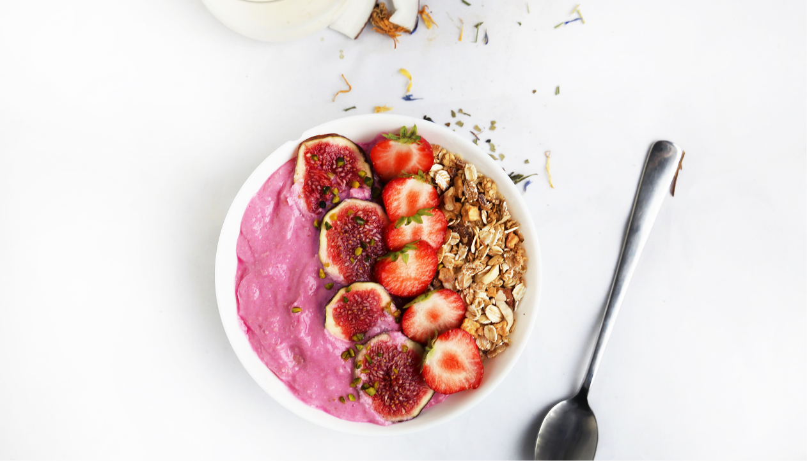

Общие рекомендации

Основные правила:
Правило №1
Местное производство
Правило №2
Контроль количества
Правило №3
Больше растительной пищи
Важно!
*Осознанное потребление еды помогает снизить риск развития заболеваний и сократить воздействие на окружающую среду.
В этой статье мы представим несколько идей, которые помогут вам потреблять еду осознанным и экологически чистым способом.
В современном мире экологические проблемы становятся все более актуальными, и мы должны прикладывать усилия для снижения негативного воздействия на окружающую среду. Потребление еды также является одним из аспектов, который может внести свой вклад в экологическую устойчивость.
Общие рекомендации по потреблению продуктов питания:
Предпочитайте упаковку из натуральных материалов.
Рассчитывайте количество еды, которое вы сможете съесть до того, как она испортится.
Используйте продукты местного производства.
Если вам позволяет здоровье, потребляйте меньшее количество мяса и большее количество растительной пищи.
Избегайте продуктов с высоким уровнем пестицидов и гормонов.